一，简介
我的世界里面，激活铁轨上面的矿车会不断抖动，把坐在矿车上的生物抖到旁边。从抖动的矿车正上方坠落的生物在接触矿车一瞬间会坐上矿车然后立即被抖下去，由此可以设计出相当优秀的三叉戟处死。
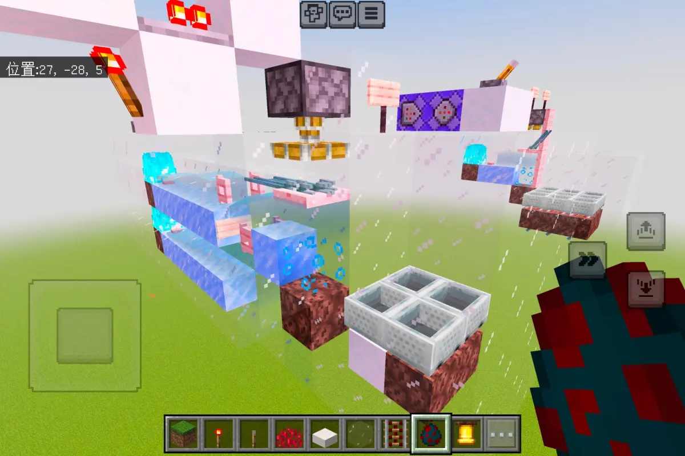
designed by遥远的嘱托＆离殇之枫（1.21.30长矛更新后更改见 网页链接）
怪物秒死（用过就知道比搅拌机死得快很多），退出重进抗卸载（也就是不会掉叉子）切换维度可能掉叉、单个活塞更少pt量、处死速度受限于抖矿车本身的速度（每车每gt一个生物），但也非常高。
因此在BE猪人塔的处死上可以代替三叉戟搅拌机使用。
二，它是如何运作的？
换句话说，抖矿车到底会把生物送往哪一个目的地？BE抖矿车可以抖到以下24个方块（图中就是红色玻璃）的的上表面
一. y-1的平面：
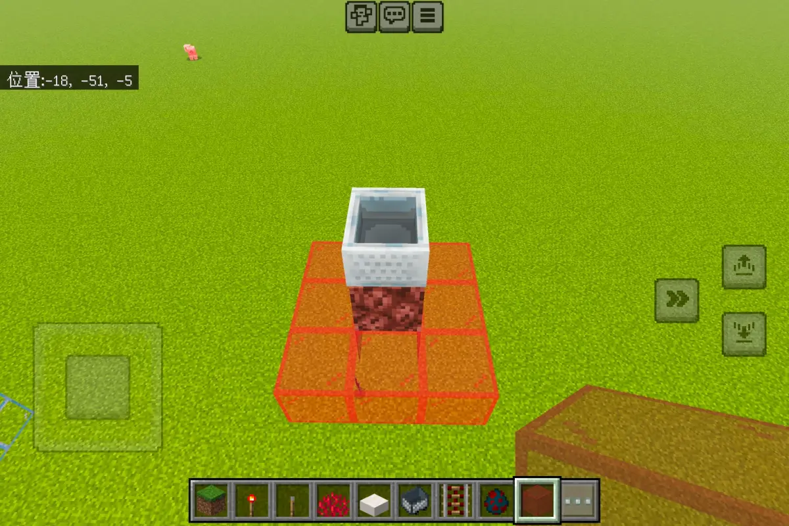
二. y平面：
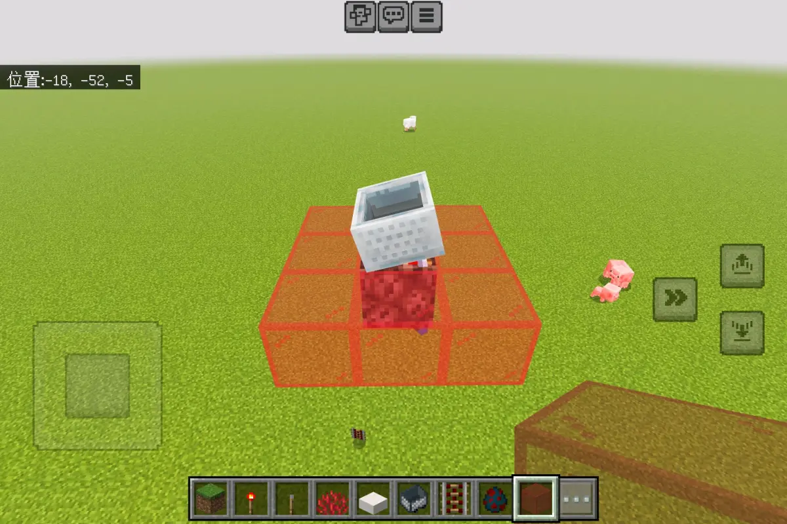
三. y+1平面：
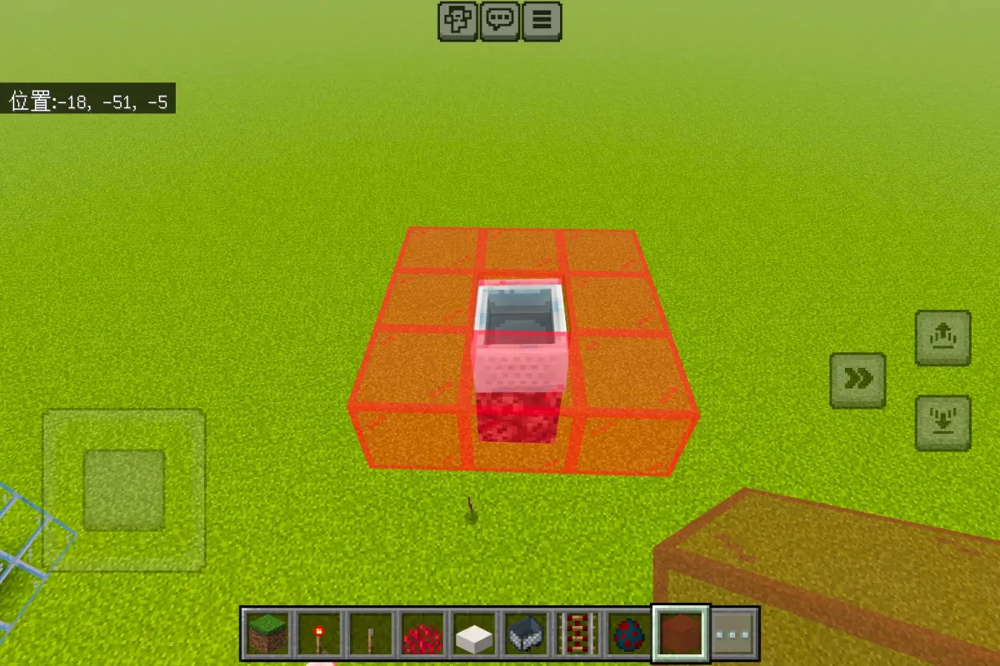
也就是矿车周围一圈。
大量实验表明：这24个方块始终遵循相同的优先顺序，即有更优先的目的地就不会抖到优先级更低的方块上。对于上表面完整的方块，这个优先级顺序是：
y北方＞y南方＞y东北＞y东南＞y西北＞y西南＞y东方＞y西方
＞y+1北方＞y+1南方＞y+1东北＞y+1东南＞y+1西北＞y+1西南＞y+1东方＞y+1西方
＞y-1北方＞y-1南方＞y-1东北＞y-1东南＞y-1西北＞y-1西南＞y-1东方＞y-1西方
另外，有两个方块不能作为目的地：一个就是空气方块，另外一个就是脚手架
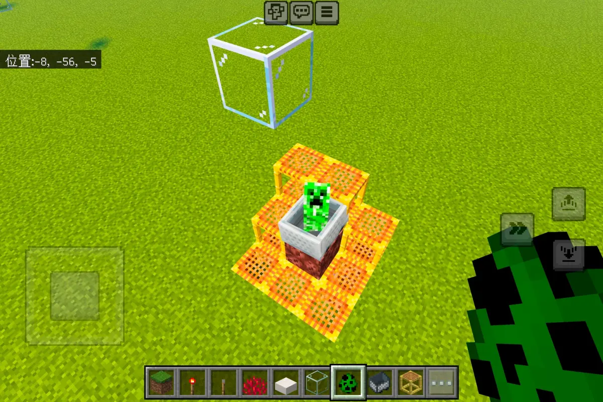
虽然灵魂沙和泥巴缺两个像素，但是上面放铁轨的时候就跟普通方块一样，估计是懒得写两个函数了：
下图二者能抖到的范围等同。
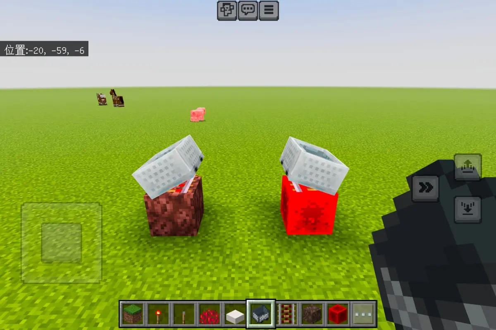
三，对于不完整方块，如何选择目的地
很简单，分两种情况，分别视为不同高度的完整方块，然后遵从24个方块的优先级。
（1）判断抖矿车目的地的优先级时，这些方块相当于把它破坏掉，在原本它在的地方放一个完整方块。图里面的玻璃是为了在侧面放方块用的，忽略掉它们。
包括：侧面有2方块的侧面钟
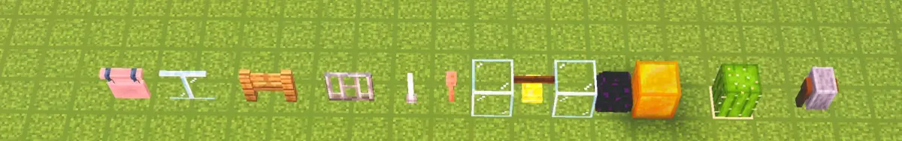
（2）这些方块相当于直接破坏掉它们，然后露出它正下方的完整方块
包括：1-8层雪，侧面只有1个方块的侧面钟，放地上的钟，和一切没碰撞箱的花草啥的（不含脚手架，脚手架是被无视的那种）
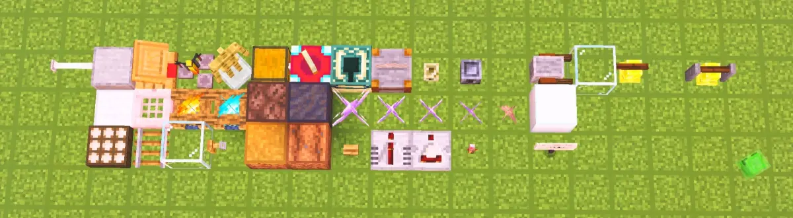
这么说有点抽象，举个例子，这是一个玻璃板：
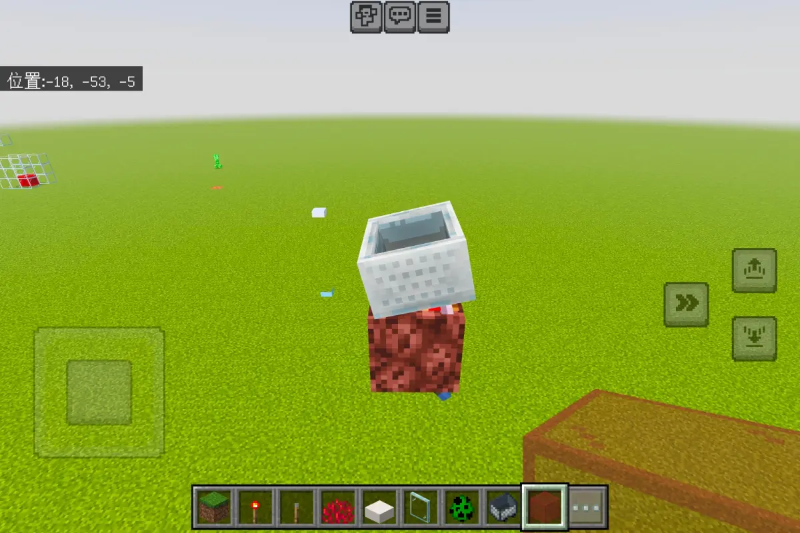
这是一个红色玻璃：
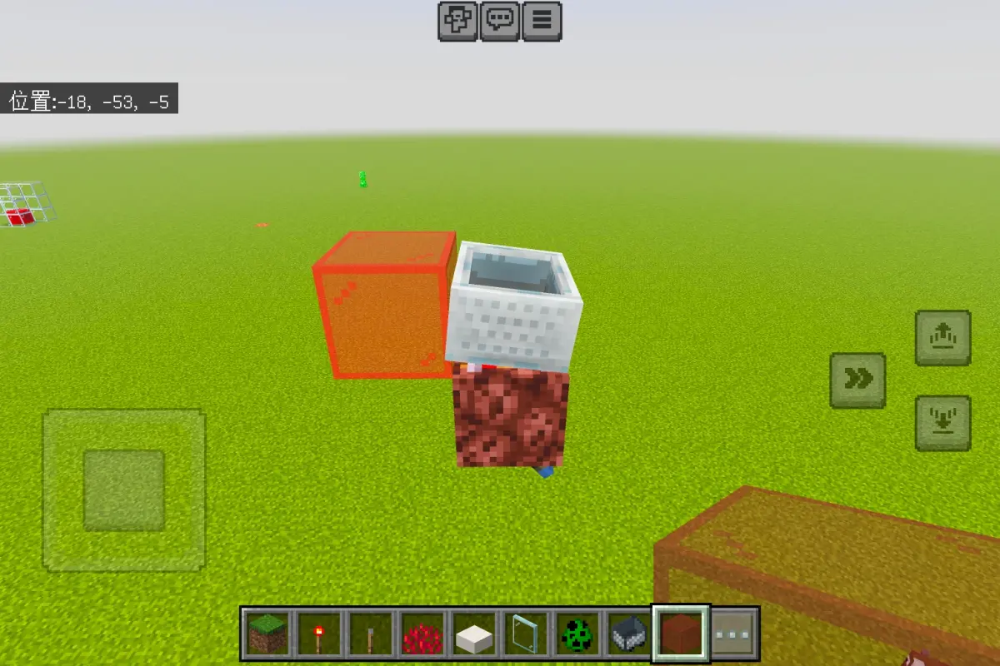
我想判断玻璃板的优先级，我就把它替换成这个红色玻璃，再判断就好了。
再比如：这是一个灵魂沙：（说的是左上方的那个灵魂沙！）
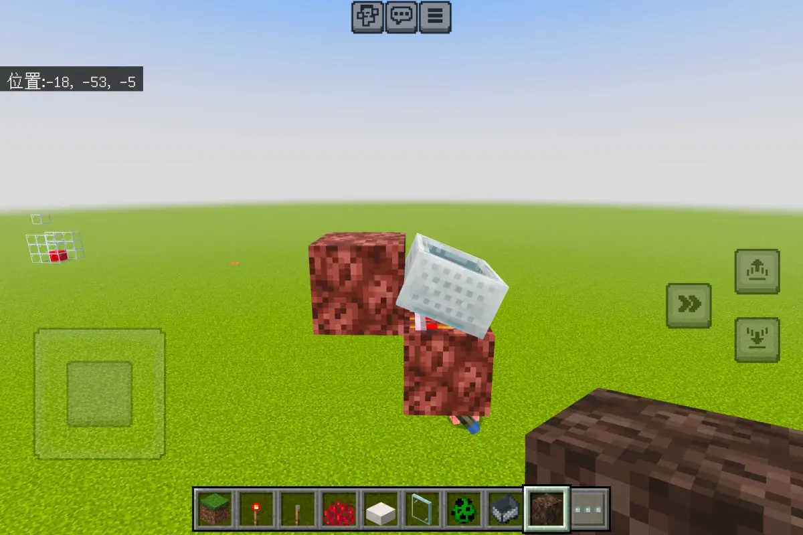
这是一个红色玻璃：
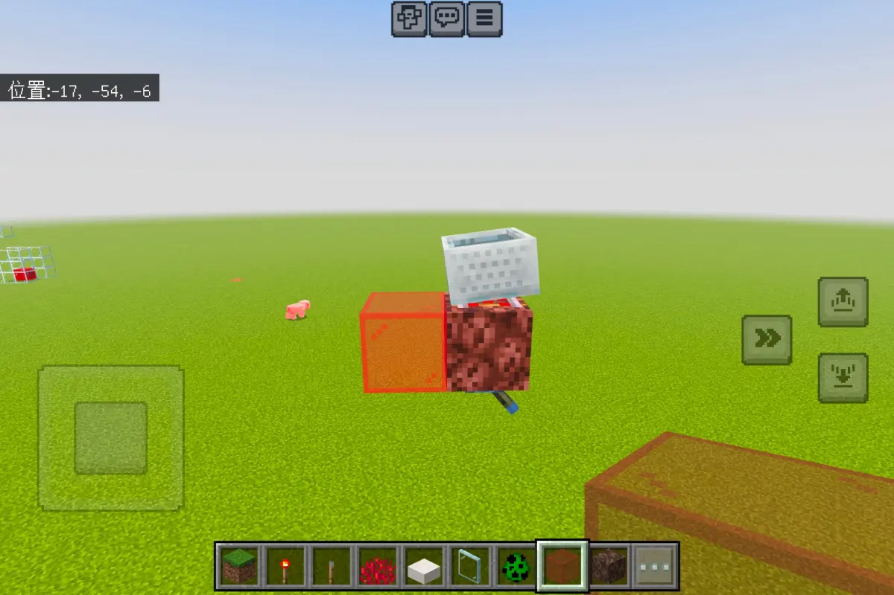
我想判断灵魂沙的优先级，那么我只要把灵魂沙换成这个红色玻璃再判断就好了！两个例子的区别就在于，玻璃板属于第一组方块，而灵魂沙属于第二组方块。
其实，两个例子里面，站在不完整方块上面（也就是玻璃板或者灵魂沙），游戏显示的坐标y值和站在红色玻璃上的y值是一样的。一个特例是放在侧面的钟，属于第一组方块但坐标跟第二种方块相同。
四，碰撞箱检测
抖车终点是能满足碰撞箱检测的优先级最高的方块。
满足碰撞箱检测大致是说，如果生物站在方块中央，它的碰撞箱不与任何方块碰撞箱重叠。
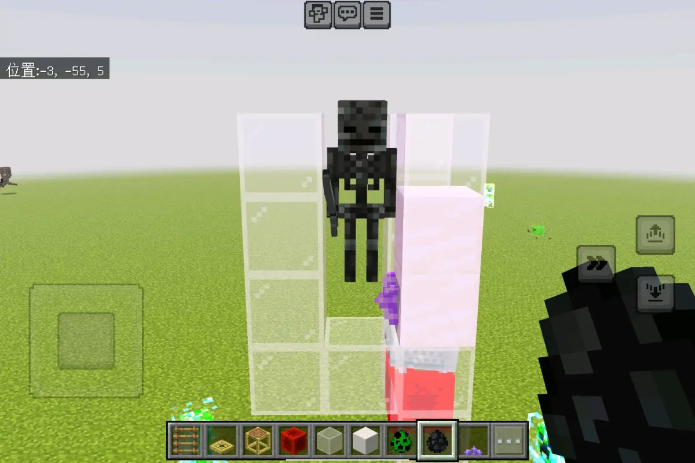
凋灵骷髅0.7宽，小紫水晶0.1875高，如果大黑站方块中心，0.7/2+0.1875=0.5375＞0.5，所以啊，图中大黑没有站在玻璃上而是站在小紫水晶上的。
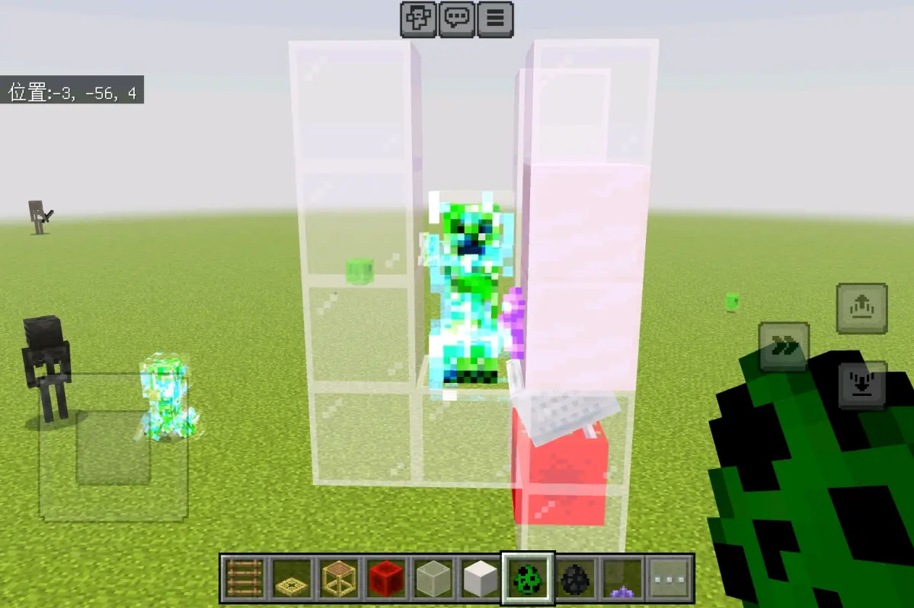
苦力怕0.6宽，小紫水晶的头部到对面玻璃的空隙能容下苦力怕，所以苦力怕直接站玻璃上。
通过限制高度/宽度可以分离大小疣猪兽、蘑菇牛、守卫者和鱿鱼等等，挺好用。
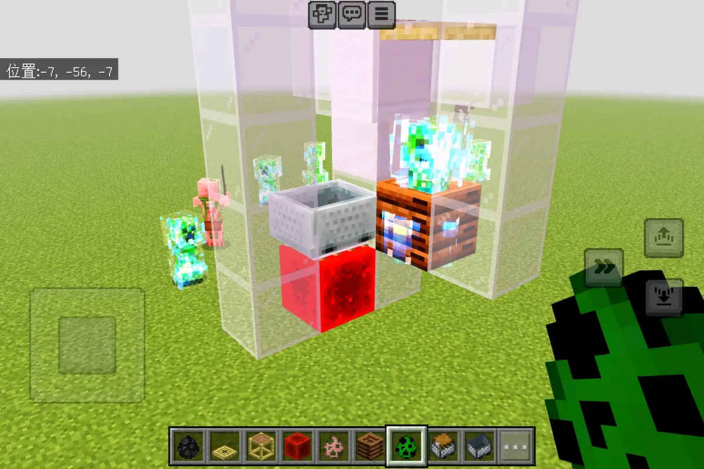
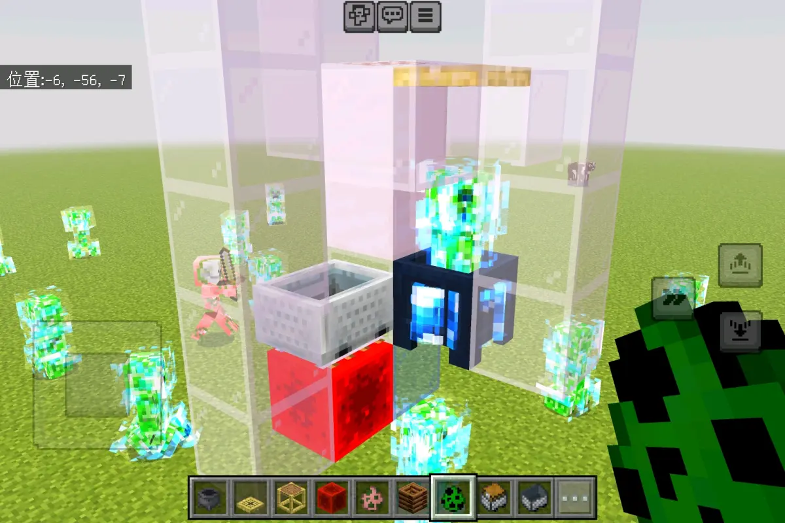
炼药锅，堆肥桶的空隙能容下苦力怕却不能容下僵尸猪灵，估计因为苦力怕比僵尸猪灵瘦。
小紫水晶虽然只有0.1875长度，但是麻酱却视它为合法落脚点（bug）
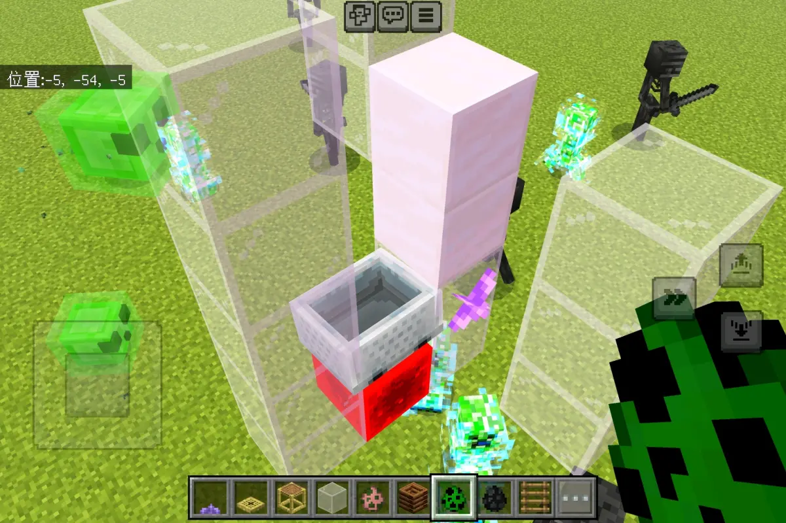
苦力怕0.6宽，0.6/2+0.1875=0.4875＜0.5，就是说，苦力怕抖上去时，是直接被抖到空气上，脚没有一点点是站在小紫水晶上的，所以可以自由下落。
不过，实际用起来如果多只苦力怕一起抖出来可能相互挤压，有的就站小紫水晶上了。还是建议加梯子。
1.21.0的按钮也有小紫水晶一样的效果，目前1.21.93已经被修复。
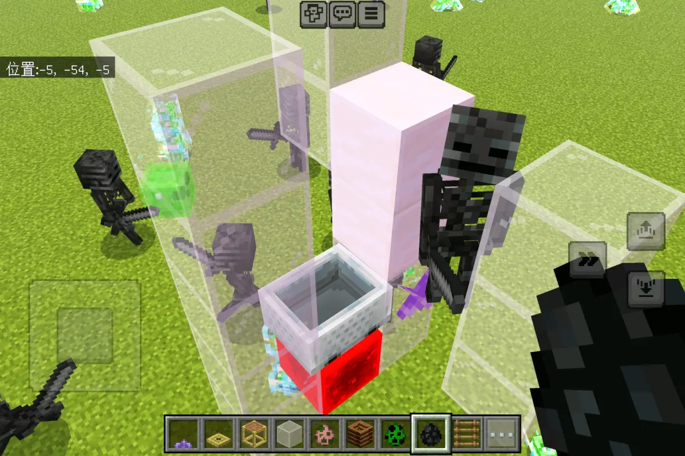
大黑是有一点站小紫水晶上的，所以掉不下去。
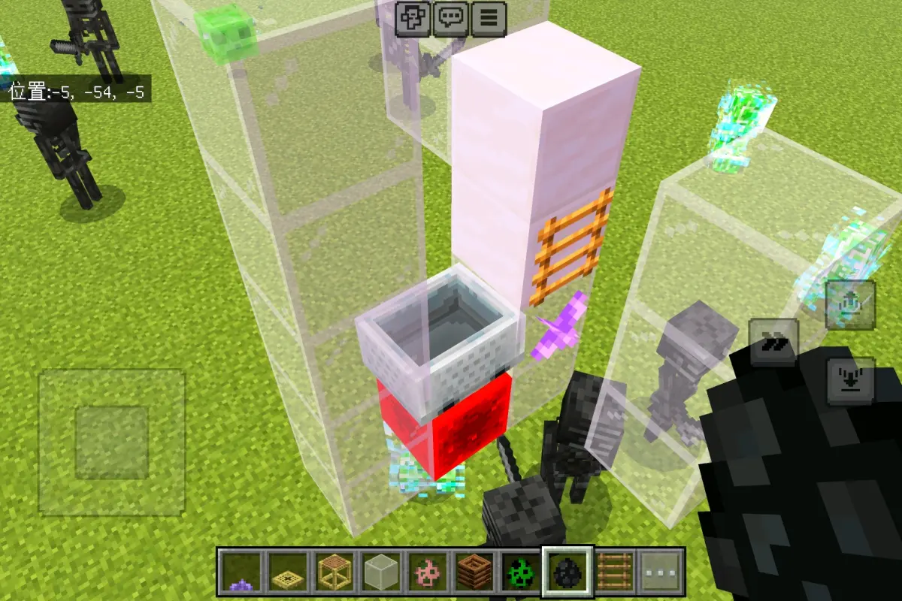
梯子和小紫水晶一样都是0.1875长，梯子不像小紫水晶有bug被当成合法落脚点。大黑被抖到小紫水晶上，大黑碰撞箱与梯子有重叠（0.7/2+0.1875=0.5375）触发挤压就能被挤下去了。
1.19.50.20以前的版本，灵魂沙是完整方块，属于第一种方块而不是高版本所属于的第二种方块了。在低版本，生物没法被抖进水里。
恶魂大概被视作1*4*1的生物，4是高度（好吧这是粗略数据，没有细测），大史莱姆岩浆怪虽然宽2.08却能被抖进1*1的空间里，似乎这种大的在谈论宽度的碰撞箱检测时有另一套规则。
大黑（0.7宽），苦力怕僵尸猪灵（0.6宽）全方向传送带见群文件，qq群：948204464
好了，问题不大，就这样。测试版本：1.21.50，1.21.93，东西年年改，麻酱不是人
鸣谢@离殇之枫@cookie_曲奇@无语了_wy